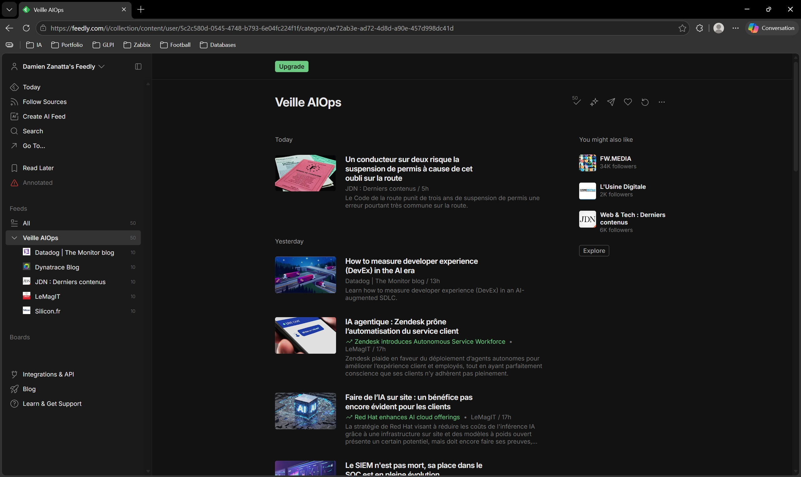

Sujet : L’AIOps au service de la supervision d’infrastructure
Problématique : Comment l’AIOps transforme-t-il la supervision classique en automatisant la détection des anomalies et en accélérant l’identification des causes d'incident réseau ?
Problématique : Comment l’AIOps transforme-t-il la supervision classique en automatisant la détection des anomalies et en accélérant l’identification des causes d'incident réseau ?
L'AIOps (Artificial Intelligence for IT Operations) désigne l'intégration du Big Data et du Machine Learning au cœur de la gestion des opérations IT. Cette couche d'intelligence analytique vient s'interfacer avec les solutions de supervision en place (telles que Centreon ou Zabbix).
En analysant les flux de données en continu, les algorithmes apprennent le comportement normal de l'infrastructure informatique (combinaisons CPU, RAM, trafic réseau). Ils sont ainsi capables de détecter de manière autonome les comportements anormaux, sans nécessiter la définition manuelle et rigide de seuils d'alerte statiques.
Apports opérationnels :
Au travers de ma collecte d'informations, j'ai pu tirer plusieurs conclusions majeures sur l'évolution de mon futur métier :
Pour mener à bien cette veille technologique tout au long de mon parcours, j'ai structuré une démarche s'appuyant sur le modèle Push (l'information est poussée vers moi). J'ai opté pour une approche hybride afin d'exploiter efficacement les outils du marché.
Afin de capter les publications ciblées sur le Web, j'ai configuré des alertes automatisées utilisant des opérateurs booléens précis pour filtrer le bruit (ex : "AIOps" AND "infrastructure" et "AIOps" AND "supervision"). Ces requêtes analysent le web en continu pour isoler l'actualité de mon sujet.

En parallèle, j'utilise l'agrégateur de flux RSS Feedly pour suivre l'actualité de la presse informatique spécialisée (LeMagIT, Silicon.fr, Journal du Net) ainsi que les blogs d'ingénierie officiels des leaders technologiques du secteur (Datadog, Dynatrace). Les flux sont centralisés au sein d'un dossier dédié aux solutions de supervision.

À partir du flux d'informations collecté par mes outils, j'effectue un tri qualitatif pour ne retenir que les articles apportant une réelle valeur ajoutée à l'option SISR. Les analyses techniques, les cas d'usage concrets et les synthèses critiques de ces articles phares sont directement formalisés et diffusés dans l'onglet "Revue d'articles" de ce portfolio numérique, offrant un historique transparent et directement consultable.
Cette analyse dresse un bilan de l'intégration de l'AIOps au sein des centres de services. L'article démontre comment le Machine Learning modifie la posture des équipes d'exploitation réseau, leur permettant de passer d'une maintenance réactive à une stratégie d'infrastructure proactive.
Une ressource axée sur l'analyse technique des couches de données. Elle aborde la manière dont les algorithmes ingèrent les métriques pour automatiser la détection des goulots d'étranglement de bande passante et l'optimisation des performances dans les architectures cloud complexes.
Cet article se concentre sur l'évolution du métier de technicien et d'administrateur de systèmes et réseaux (SISR). L'AIOps y est décrit comme une boîte à outils indispensable pour assister les équipes humaines face à la volumétrie exponentielle des données d'infrastructure.
Une mise en application concrète sur Centreon, une solution de supervision de référence pour le profil SISR. Le document détaille l'intégration de fonctionnalités intelligentes pour analyser les tendances de performance des serveurs en temps réel et simplifier le traitement des alertes.
Une lecture essentielle apportant un regard critique nécessaire pour l'épreuve. L'article démontre que l'AIOps n'est pas une solution miracle et rappelle que sa pertinence dépend directement d'une configuration rigoureuse de la supervision de base et de la montée en compétences des équipes informatiques sur la gestion des SLA.